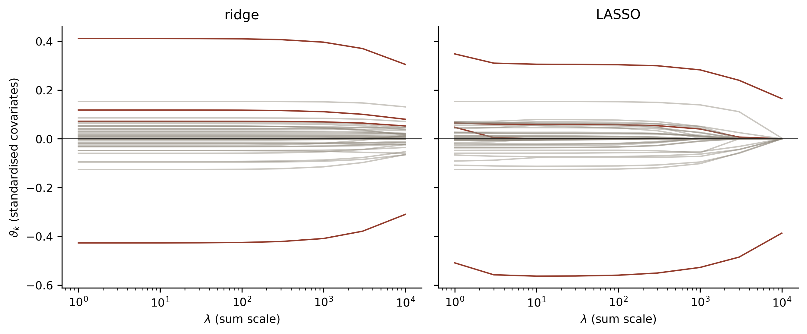
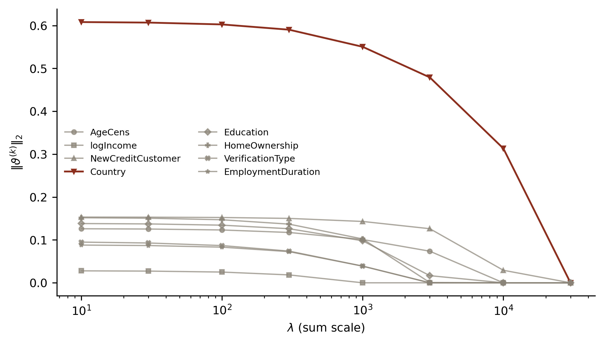
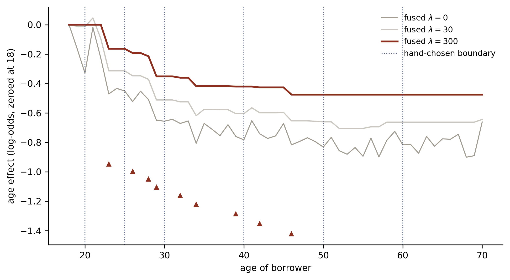
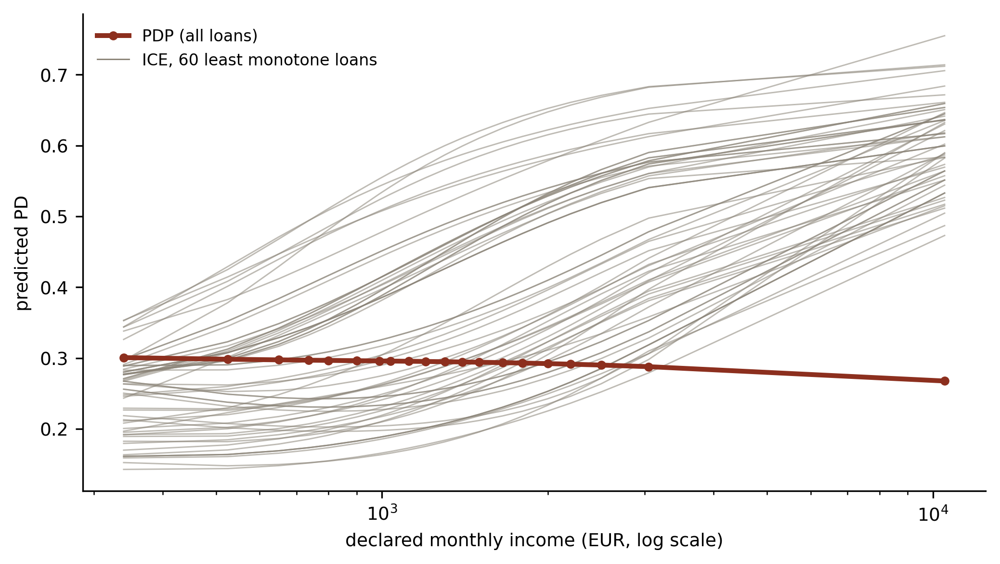

Deep Learning for Actuarial Modelling: a credit risk companion
Author
Mario Ervedosa, adapting Scognamiglio, Maggi and Wüthrich
Published
September 2, 2026
Abstract
Lecture 8 of Deep Learning for Actuarial Modeling has two halves, and this companion keeps both while discharging a debt the seventh credit lecture recorded. Regularisation first, worked on the Bondora design matrix: ridge shrinks, LASSO selects, and the course’s rule that the intercept is excluded from the penalty turns out to be the balance property of lecture 7 restated in penalty language, since penalising it costs 19.9 per cent of balance at the top of the ridge path. Group LASSO then drops whole risk drivers as a scorecard’s variable reduction step does, and fused LASSO is automated coarse classing: on one-year age bands it selects nine boundaries, all of them between 23 and 46, and beats the six hand-chosen boundaries of the fourth and fifth lecture on test deviance while spending nothing on the sparse tail those boundaries resolved. ICEnet then constrains the network’s predictions instead of its weights. The unconstrained network’s income partial dependence plot looks monotone while 77.8 per cent of individual borrowers sit on a curve that rises somewhere, which is what the averaging hides, and a penalty of 1.0 removes all but 0.1 per cent of them for 0.078 test deviance points. Finally, refitting the readout as a canonical-link logistic regression on the frozen learned features restores the balance property exactly, to a score residual of 2e-11, without undoing the constraints.
Introduction
The seventh credit lecture closed on a promissory note of its own. Having shown that the network misses the balance property by 0.69 per cent where the canonical-link GLM holds it exactly, and having measured what the two available repairs cost after the fact, it deferred a third possibility to this lecture: imposing the property during the fit instead of repairing it afterwards. Lecture 8 of the course is where that becomes possible, because its subject is what happens when the fitting objective carries a penalty alongside the loss.
The course lecture has two halves and this companion keeps both. The first surveys regularisation, meaning ridge, LASSO, elastic net, group LASSO, and fused LASSO, each of which penalises the parameter vector. The second presents ICEnet, the architecture of Richman and Wüthrich (2024), which instead penalises the fitted regression function, so that its individual conditional expectation curves come out smooth and monotone in chosen covariates. Credit modelling, however, meets both halves with prior practice already in place, since scorecard development has selected variables by stepwise procedures for decades and has always insisted that the fitted risk curve run in the direction the credit officer expects.
Three results here are new to the series. First, the course’s rule that the intercept must be excluded from the penalty turns out to be the balance property under another name, which is verifiable by breaking the rule and watching the balance go. Second, fused LASSO on one-year age bands is automated coarse classing, so the boundaries the fourth and fifth lecture chose by hand can be compared against boundaries the data chooses for itself. Finally, the network’s readout refitted on frozen learned features restores exact balance while leaving the ICEnet constraints standing, which discharges what lecture 7 asked for.
Two conventions carry over. There is no exposure offset, since default_12m is a zero-one flag over a fixed twelve-month window, so the case weights \(v_i\) of the source deck are all one and the dispersion \(\varphi\) is one. Similarly, deviance is quoted on the series’ scale throughout, meaning \(100 \times 2 \times\) the mean Bernoulli deviance contribution, so the numbers below sit beside those of lectures 2, 4, 5, 6, and 7 without rescaling.
Imports and shared settings
import numpy as npimport pandas as pdimport polars as plimport torchimport statsmodels.api as smimport matplotlib.pyplot as pltfrom sklearn.metrics import roc_auc_scoreBLUE, RED, GREY ="#3B4A75", "#8C2F1E", "#8A8377"plt.rcParams.update({"figure.dpi": 150, "font.size": 9,"axes.spines.top": False, "axes.spines.right": False})torch.set_num_threads(4)
1 Regularisation
NoteOverview
Regularisation is a fitting technique aiming at shrinkage and selection of the parameters during their estimation, achieved by penalising extreme values so that the fitted model comes out smoother in some sense. Consequently this section works the course’s catalogue of penalties on the Bondora design matrix, and it ends on the two that credit modelling already has its own name for.
1.1 What a credit model is trying to shrink
A regression model \(\boldsymbol{X} \mapsto \mu(\boldsymbol{X})\) is correctly specified when it carries every relevant covariate in the right form and carries nothing redundant, missing or wrong. Redundant means two covariates presenting the same information, missing means available information left out, and wrong means a covariate that does not move the response at all. Since none of the three is knowable in advance on a real book, covariate selection is where the modeller spends the effort.
Consequently the temptation is to include everything and let the fit sort it out. On finite samples, however, that strategy fails, through over-fitting, through collinearity, and through the plain identifiability problems that follow when two columns carry one signal. A credit application form is a generous source of all three, because Bondora’s raw extract runs to 112 columns before any engineering and several of them are near-duplicates by construction, since IncomeTotal is the sum of seven declared income components that also appear individually.
Model complexity control therefore matters, and the target is a sparse model, meaning the fewest covariates that still predict well. In practice one starts slightly too large and then shrinks, so regularisation earns its place by penalising complexity, extreme coefficients, or both.
Credit, moreover, has its own reason to care, over and above predictive accuracy. A scorecard is a document that has to be explained to a credit committee, to model validation, and in a consumer complaint to the borrower who was declined. Hence every surviving variable is a variable somebody must be prepared to defend, so parsimony buys explicability as well as generalisation.
1.2 The penalty function
Regularised estimation solves \[
\widehat{\vartheta} ~\in~ \arg\min_\vartheta \left(
\sum_{i=1}^n \frac{v_i}{\varphi}\, L\!\left(Y_i, \mu_\vartheta(\boldsymbol{X}_i)\right)
+ \lambda\, R(\vartheta_{\backslash 0}) \right),
\] where \(R : \mathbb{R}^r \to \mathbb{R}_+\) is the penalty function, while \(\lambda \geq 0\) is the regularisation parameter. The parameter vector is \(\vartheta = (\vartheta_0, \vartheta_1, \ldots, \vartheta_r)^\top\), whose first component \(\vartheta_0\) is the intercept, so called the bias term in machine learning because it sets the overall level and no slope. The notation \(\vartheta_{\backslash 0}\) means the vector with that first component removed.
Note that no \(1/n\) scaling sits in front of the sum. Although dropping it leaves the unregularised solution unchanged, it makes \(\lambda\) independent of the sample size, so a \(\lambda\) tuned on one book transfers to a book of another size. Consequently every \(\lambda\) quoted in this half of the lecture is on that sum scale, against \(n = 118{,}933\) training loans, which is why the values run into the thousands.
1.3 Standardisation comes first
None of these penalties is invariant to the scale of a covariate. Ridge penalises \(\vartheta_k^2\), so a covariate measured in euros attracts a coefficient a thousand times smaller than the same covariate measured in thousands of euros, and it therefore attracts a million times less penalty. Standardising every column to mean zero and unit variance on the training sample makes the penalty mean the same thing for all of them. This is not optional housekeeping. On the Bondora design matrix, IncomeTotal on its raw scale and NewCreditCustomer as a zero-one flag differ in standard deviation by a factor of about 2,700.
We rebuild the modelling frame and the design matrix of the fourth and fifth lecture without change, so every number below is comparable with the ones those lectures printed.
learn 118,933 / test 29,734; learn default rate 0.288776
One structural detail deserves flagging, because it differs from the GLM practice of the second lecture. The design matrix carries every level of each categorical covariate, with no reference level dropped, exactly as the fourth and fifth lecture handed it to the network. Under an unpenalised fit that makes \(\vartheta\) unidentified, although the fitted values remain identified. Under a penalty it is the standard and preferred setup, since group LASSO can then remove a whole covariate symmetrically instead of removing every level except an arbitrary baseline.
1.4 A single fitter for every penalty
Each penalty below is a different \(R\), so one optimiser serves all of them. We use proximal gradient descent with Nesterov acceleration, known as FISTA, in which the smooth part of the objective is handled by a gradient step and the penalty by its proximal operator. The proximal operator is the reason the code produces coefficients that are exactly zero, which ordinary subgradient descent does not.
def soft(v, t):"""Soft-thresholding: the proximal operator of the L1 norm."""return torch.sign(v) * torch.clamp(v.abs() - t, min=0.0)def fit_pen(Z, y, lam=0.0, kind="none", alpha=1.0, groups=None, pen_cols=None, penalise_intercept=False, steps=600):"""FISTA on the sum-scale Bernoulli deviance plus lambda * R(theta). kind is one of none, ridge, lasso, enet, group. pen_cols is a boolean mask selecting the columns the penalty acts on; penalise_intercept is the switch the course tells us to leave off, and section 1.7 turns on. """ n, q = Z.shapeif pen_cols isNone: pen_cols = torch.ones(q, dtype=torch.bool) Zi = torch.cat([torch.ones(n, 1, dtype=Z.dtype), Z], 1)# Lipschitz constant of the sum-deviance gradient, giving a safe step. step =1.0/ (0.5* torch.linalg.matrix_norm(Zi, 2) **2) theta = torch.zeros(q +1, dtype=Z.dtype) theta[0] = torch.log(y.mean() / (1- y.mean())) w, tk = theta.clone(), 1.0 mask = torch.cat([torch.tensor([penalise_intercept]), pen_cols])for _ inrange(steps): grad =2.0* (Zi.T @ (torch.sigmoid(Zi @ w) - y))if kind =="ridge": grad = grad +2.0* lam * (w * mask) v, t = w - step * grad, step * lam new = v.clone()if kind =="lasso": new[mask] = soft(v[mask], t)elif kind =="enet": new[mask] = soft(v[mask], t * alpha) / (1+2* t * (1- alpha))elif kind =="group":for gcols in groups: blk = v[gcols] shrink =1.0- (t * np.sqrt(len(gcols))) /max(blk.norm().item(), 1e-12) new[gcols] = blk *max(0.0, shrink) tk_new = (1+ np.sqrt(1+4* tk * tk)) /2 w = new + ((tk -1) / tk_new) * (new - theta) theta, tk = new, tk_newreturn thetadef predict(theta, Z): Zi = torch.cat([torch.ones(Z.shape[0], 1, dtype=Z.dtype), Z], 1)return torch.sigmoid(Zi @ theta).numpy()def dev(pred, obs): eps =1e-12 p = np.clip(np.asarray(pred, float), eps, 1- eps) y = np.asarray(obs, float)return100*2* np.mean(-y * np.log(p) - (1- y) * np.log(1- p))def report(label, theta): pl_, pt_ = predict(theta, Z_learn), predict(theta, Z_test)print(f"{label:16s} nonzero {int((theta[1:].abs() >1e-8).sum()):3d}/38 "f"learn {dev(pl_, y_learn):7.3f} test {dev(pt_, y_test):7.3f} "f"AUC {roc_auc_score(y_test, pt_):.4f} "f"balance {100* (pl_.mean() / y_learn.mean() -1):+7.3f}%")return theta
The unregularised fit is the reference point for everything that follows.
Its balance miss prints as zero to three decimals, which is the seventh lecture’s result reappearing. A logistic regression fitted by maximum likelihood carries the score equation for the intercept, \(\sum_i (\widehat{\mu}_i - Y_i) = 0\), so its fitted probabilities average to the observed default rate exactly. Keep that fact in view, because section 1.7 breaks it deliberately.
1.5 Ridge regularisation
Ridge regression, also known as Tikhonov (1943) regularisation, takes the squared \(L^2\) norm as its penalty, \[
\widehat{\vartheta}^{\,\rm ridge} ~\in~ \arg\min_\vartheta \left(
\sum_{i=1}^n \frac{v_i}{\varphi} L\!\left(Y_i, \mu_\vartheta(\boldsymbol{X}_i)\right)
+ \lambda\, \|\vartheta_{\backslash 0}\|_2^2 \right).
\] Large coefficients are punished, which is called shrinkage, and the degree of it is set by \(\lambda\), which is usually chosen by cross-validation because no analytic optimum exists.
The path is uneventful, which is itself the finding. Test deviance improves by 0.028 points between \(\lambda = 0\) and \(\lambda = 1{,}000\) and then deteriorates, so the unregularised fit was barely over-fitted to begin with. Indeed that should be expected on a GLM with 38 columns and 118,933 observations, since the ratio of observations to parameters is above 3,000 to one. Ridge earns its keep on wide problems, whereas the Bondora design matrix is narrow. Consequently a validation team asking why this scorecard carries no ridge penalty can be answered with the path above.
1.6 LASSO regularisation
LASSO regularisation, the least absolute shrinkage and selection operator of Tibshirani (1996), takes the \(L^1\) norm instead, \[
\widehat{\vartheta}^{\,\rm LASSO} ~\in~ \arg\min_\vartheta \left(
\sum_{i=1}^n \frac{v_i}{\varphi} L\!\left(Y_i, \mu_\vartheta(\boldsymbol{X}_i)\right)
+ \lambda\, \|\vartheta_{\backslash 0}\|_1 \right).
\] Its behaviour differs fundamentally from ridge, and the reason is a property of the two norms at the origin. The \(L^2\) norm is differentiable there whereas the \(L^1\) norm is not, so an \(L^1\) optimum can sit exactly at a corner where some components vanish. Increasing \(\lambda\) therefore sends components to exactly zero one after another, which delivers a sparse model and, read the other way, an ordering of the covariates by importance.
Geometrically the feasible set under the Lagrangian formulation is an \(L^2\) ball for ridge and an \(L^1\) cube for LASSO. Since projecting onto a ball lands in the interior of a face almost surely, whereas projecting onto a cube frequently lands on a corner, and since a corner is a coordinate set to zero, the sparsity follows from the geometry alone.
Seven of the 38 columns leave by \(\lambda = 100\) and 27 of them by \(\lambda = 3{,}000\), at which point the test deviance has given up 0.855 points and the AUC 0.006. Scorecard practice, however, usually stops well short of that. Instead the common workflow is to use LASSO for selection and then refit an unpenalised model on the survivors, so that the reported coefficients carry no shrinkage bias and the standard errors mean what they usually mean.
cols =list(X_all.columns)is_country = np.array([c.startswith("Country:") for c in cols])lams = np.array([1, 3, 10, 30, 100, 300, 1000, 3000, 10000])fig, axes = plt.subplots(1, 2, figsize=(9, 3.8), sharey=True)for ax, kind, title in [(axes[0], "ridge", "ridge"), (axes[1], "lasso", "LASSO")]: P = np.array([fit_pen(Z_learn, yl, float(l), kind)[1:].numpy() for l in lams])for k inrange(P.shape[1]): ax.plot(lams, P[:, k], lw=1.1, color=RED if is_country[k] else GREY, alpha=0.95if is_country[k] else0.45) ax.set_xscale("log"); ax.axhline(0, color="black", lw=0.6) ax.set_xlabel(r"$\lambda$(sum scale)"); ax.set_title(title)if kind =="lasso":for l in [10, 300, 3000]: nz =int((np.abs(P[list(lams).index(l)]) >1e-8).sum()) ax.annotate(f"{nz}", (l, 0.62), ha="center", fontsize=8, color=BLUE)axes[0].set_ylabel(r"$\vartheta_k$(standardised covariates)")plt.tight_layout(); plt.show()

Coefficient paths on the standardised Bondora design matrix, ridge on the left and LASSO on the right, plotted against the regularisation parameter on a log scale. Ridge shrinks every coefficient towards zero together and none of them arrives; LASSO sends them to exactly zero one at a time, and the count of survivors is printed above each path. The four Country coefficients are drawn in bronze-red and the remaining 34 in grey, which is why one family stays visibly larger than the rest under both penalties.
1.7 Best-subset selection and elastic net
For completeness the course names two further members of the family. Best-subset selection uses the \(L^0\) penalty \(\lambda \sum_{k=1}^r \mathbf{1}_{\{\vartheta_k \neq 0\}}\), which counts non-zero coefficients directly. It is rarely used, since optimising it is combinatorially hard, and LASSO is the tractable convex relaxation people reach for instead.
Elastic net regularisation, due to Zou and Hastie (2005), combines the two norms, \[
\widehat{\vartheta}^{\,\rm net} \in \arg\min_\vartheta \left(
\sum_{i=1}^n \frac{v_i}{\varphi} L\!\left(Y_i, \mu_\vartheta(\boldsymbol{X}_i)\right)
+ \lambda \left( \alpha \|\vartheta_{\backslash 0}\|_1
+ (1-\alpha) \|\vartheta_{\backslash 0}\|_2^2 \right) \right),
\] with \(\alpha \in [0,1]\). It exists because LASSO handles correlated covariates badly, tending to pick one of a correlated group arbitrarily and zero the others, whereas the ridge component encourages the group to share the weight. Credit application data is full of correlated groups, since income, employment duration, and home ownership all proxy for financial stability, so the elastic net is often the better default on a scorecard.
for lam in [10, 100, 1000]: report(f"enet {lam}", fit_pen(Z_learn, yl, lam, "enet", alpha=0.5))
1.8 The intercept exclusion is the balance property
The course states in passing that \(\vartheta_0\) “needs to be excluded from regularisation to be able to calibrate the overall level of the model”, and warns that otherwise “we receive a statistically biased model”. For a credit portfolio that sentence has a name, and the seventh lecture spent its length on it. Indeed the overall level of a PD model is the portfolio’s expected loss and the capital plan resting on it, so a fitted model whose mean PD misses the observed default rate misprices the whole book at once.
The claim is checkable by breaking it. Since our fitter takes penalise_intercept as a switch, we can run the same ridge path twice and watch the balance property go.
Excluding the intercept holds balance at zero to five decimal places along the entire path, whatever \(\lambda\) does to the other 38 coefficients. Including it, by contrast, costs 0.30 per cent of balance at \(\lambda = 100\), 2.84 per cent at \(\lambda = 1{,}000\), and 19.92 per cent at \(\lambda = 10{,}000\), where the mean predicted PD has climbed from 28.88 per cent to 34.63.
The direction of the drift is worth reading, because it explains the mechanism. On standardised covariates, \(\vartheta_0\) is the log-odds at the mean covariate vector, so shrinking it towards zero pulls the fitted PD towards one half. Bondora defaults at about 29 per cent, therefore penalising the intercept pushes every prediction upward, and a lender running this model would hold capital against 34.6 per cent of a book that defaults at 28.9. Hence the exclusion rule is doing exactly the work lecture 7 named. The intercept is the one parameter that carries the level, and the level is the thing the balance property protects.
NoteWhere this leaves the repair hierarchy
Lecture 7 fixed a broken level after the fit, using a one-parameter intercept shift or an isotonic recalibration. The result above is the degenerate case of doing it during the fit: leave the level parameter unpenalised and the score equation survives the penalty intact, so there is nothing to repair. Section 3.6 does the same thing for a network, where the score equation has to be recovered instead, because early stopping never solved it.
1.9 Grouped covariates and group LASSO
Every penalty so far treats the components of \(\vartheta_{\backslash 0}\) one at a time. That is the wrong granularity for a dummy-coded categorical covariate, where the modeller wants to keep or drop the whole variable together. Zeroing three of Bondora’s four Country coefficients while retaining the fourth does not remove country from the model; it merges three countries into a baseline nobody chose.
We therefore partition the parameter vector into \(G\) groups, \[
\vartheta_{\backslash 0} = \left( \vartheta^{(1)}, \ldots, \vartheta^{(G)} \right)^\top
\in \mathbb{R}^{d_1 + \cdots + d_G} = \mathbb{R}^{r},
\] with \(\vartheta^{(k)} \in \mathbb{R}^{d_k}\), and apply group LASSO regularisation, due to Yuan and Lin (2006), \[
\widehat{\vartheta} ~\in~ \arg\min_\vartheta \left(
\sum_{i=1}^n \frac{v_i}{\varphi} L\!\left(Y_i, \mu_\vartheta(\boldsymbol{X}_i)\right)
+ \sum_{k=1}^G \lambda_k \|\vartheta^{(k)}\|_2 \right).
\] Note the norm is unsquared, so the penalty is non-smooth at \(\vartheta^{(k)} = \boldsymbol{0}\) and can therefore set an entire block to zero at once, whereas squaring it would give plain ridge back. We also follow the usual convention of scaling each \(\lambda_k\) by \(\sqrt{d_k}\), so that a twelve-level covariate is not penalised more lightly per level than a one-column covariate.
Bondora’s 38 columns fall into eight groups: the three genuinely scalar covariates, and the five categoricals.
groups_def = {"AgeCens": ["AgeCens"], "logIncome": ["logIncome"],"NewCreditCustomer": ["NewCreditCustomer"]}for c in ["Country", "Education", "HomeOwnership", "VerificationType","EmploymentDuration"]: groups_def[c] = [x for x in cols if x.startswith(c +":")]gidx = [torch.tensor([cols.index(c) +1for c in v]) for v in groups_def.values()]gnames =list(groups_def.keys())print({k: len(v) for k, v in groups_def.items()})
The elimination order is the point of the exercise, and it is the ordering a scorecard’s variable-reduction step is trying to produce. logIncome goes first, at \(\lambda = 1{,}000\). VerificationType, EmploymentDuration and AgeCens follow by \(\lambda = 3{,}000\), and only Country and NewCreditCustomer survive to \(\lambda = 10{,}000\).
Income leaving first deserves a comment, since it contradicts the intuition that income is the central variable in a consumer credit model. Lecture C1, however, found the same thing from the other direction. Standardising the second lecture’s GLM over the observed country and age distribution gave a marginal income curve falling only from 30.4 to 27.8 per cent across the whole income range, so income moves the fitted PD by under three percentage points once country is held fixed. Country, by contrast, moves it far more, and group LASSO is therefore reading that same geometry off the coefficient norms.
lam_grid = np.array([10, 30, 100, 300, 1000, 3000, 10000, 30000])norms = np.array([[fit_pen(Z_learn, yl, float(l), "group", groups=gidx)[ix].norm().item()for ix in gidx] for l in lam_grid])marks = ["o", "s", "^", "v", "D", "P", "X", "*"]fig, ax = plt.subplots(figsize=(6.6, 3.8))for k, name inenumerate(gnames): key = name =="Country" ax.plot(lam_grid, norms[:, k], marker=marks[k], ms=3.5, lw=1.4if key else1.0, color=RED if key else GREY, alpha=1.0if key else0.7, label=name)ax.set_xscale("log"); ax.set_xlabel(r"$\lambda$(sum scale)")ax.set_ylabel(r"$\|\vartheta^{(k)}\|_2$")ax.legend(fontsize=7, ncol=2, frameon=False)plt.tight_layout(); plt.show()

Group LASSO on the Bondora design matrix: the group norm \(\|\vartheta^{(k)}\|_2\) for each of the eight risk drivers against the regularisation parameter. A driver leaves the model when its curve reaches zero, and the order in which the eight curves arrive is the variable-reduction ordering. Country is drawn in bronze-red as the one driver that survives to the end of the path; markers distinguish the series so the panel survives a greyscale print.
1.10 Fused LASSO is automated coarse classing
Fused LASSO regularisation, due to Tibshirani et al. (2005), applies where the covariate components carry a natural adjacency, so that \(X_j\) sits between \(X_{j-1}\) and \(X_{j+1}\) and the coefficients ought to vary smoothly along that ordering. It penalises first differences, \[
\widehat{\vartheta} ~\in~ \arg\min_\vartheta \left(
\sum_{i=1}^n \frac{v_i}{\varphi} L\!\left(Y_i, \mu_\vartheta(\boldsymbol{X}_i)\right)
+ \sum_{j=2}^{r} \lambda_j \left| \vartheta_j - \vartheta_{j-1} \right| \right),
\] so an \(L^1\) penalty on the differences drives some of them to exactly zero, which in turn forces adjacent coefficients to be exactly equal. Similarly, higher-order differences work the same way.
Credit modelling, however, has been doing this by hand for forty years, and it calls the procedure coarse classing. The analyst cuts a continuous driver into fine bins, inspects the weight of evidence per bin, and then merges adjacent bins whose risk is indistinguishable until the surviving bands are few, monotone-ish, and populated enough to be stable. Setting adjacent coefficients exactly equal is precisely the merge operation, so fused LASSO performs the same procedure by optimisation, with \(\lambda\) playing the part of the analyst’s judgement about how much difference is worth a boundary.
The implementation uses a change of basis that makes the whole thing a plain LASSO. Write the age effect in the cumulative-step basis, with one column \(D_k = \mathbf{1}_{\{\mathrm{age} \ge a_k\}}\) per candidate boundary \(a_k\). Because the coefficient on \(D_k\) is then the log-odds jump at \(a_k\), a zero coefficient means no boundary there, and an \(L^1\) penalty on those coefficients is exactly the fused penalty on the underlying band effects. Consequently the equivalence costs nothing, since we already have a LASSO solver above.
ages = np.arange(18, 71)age_int = g["AgeCens"].round().clip(18, 70).astype(int).to_numpy()D = pd.DataFrame( np.stack([(age_int >= a).astype(float) for a in ages[1:]], 1), columns=[f"age>={a}"for a in ages[1:]], index=X_all.index)rest = pd.concat([g[["logIncome"]], g["NewCreditCustomer"].astype(float), onehot.astype(float)], axis=1)Xf = pd.concat([D, rest], axis=1)step_cols = [c for c in Xf.columns if c.startswith("age>=")]pen_mask = torch.tensor([c in step_cols for c in Xf.columns])print(f"fused design: {Xf.shape[1]} columns, of which "f"{int(pen_mask.sum())} penalised one-year steps")
fused design: 89 columns, of which 52 penalised one-year steps
The step columns are deliberately left unstandardised, so that each coefficient reads directly as a log-odds jump at that birthday and the penalty treats every candidate boundary alike. The remaining covariates are standardised as before and left unpenalised, since they are controls here while the age boundaries are the object of the exercise.
Xf_learn, Xf_test = Xf.iloc[idx_learn], Xf.iloc[idx_test]mf, sf = Xf_learn.mean().copy(), Xf_learn.std().replace(0, 1.0).copy()mf[step_cols], sf[step_cols] =0.0, 1.0Zf_learn = torch.tensor(((Xf_learn - mf) / sf).to_numpy(np.float64))Zf_test = torch.tensor(((Xf_test - mf) / sf).to_numpy(np.float64))HAND = [20, 25, 30, 40, 50, 60] # the hand-chosen boundaries of lectures 4 and 5fused = {}for lam in [0, 10, 30, 100, 300, 1000]: th = fit_pen(Zf_learn, yl, lam, "lasso"if lam else"none", pen_cols=pen_mask, steps=800) fused[lam] = th kept = [int(ages[1:][i]) for i, v inenumerate(th[1:][pen_mask]) ifabs(v) >1e-6] pt_ = predict(th, Zf_test)print(f"lambda {lam:5d}{len(kept):2d} boundaries "f"test {dev(pt_, y_test):7.3f} AUC {roc_auc_score(y_test, pt_):.4f}{kept}")print(f"\nhand-chosen boundaries of lectures 4 and 5: {HAND}")
Read the boundary lists first, since the deviances move very little here. At \(\lambda = 300\) the penalty keeps nine boundaries, at ages 23, 26, 28, 29, 32, 34, 39, 42, and 46, while it keeps none above 46. The six hand-chosen boundaries were 20, 25, 30, 40, 50, and 60, so two of the six were spent on territory where the data asks for no boundary at all, whereas the dense stretch from 26 to 34, where the data asks for four, received one.
The reason is where the book’s mass and its risk gradient sit.
ac = g["AgeCens"].round().astype(int)for lo, hi in [(18, 22), (23, 34), (35, 46), (47, 59), (60, 70)]: sel = (ac >= lo) & (ac <= hi)print(f"age {lo}-{hi}: {sel.sum():7,} loans ({100* sel.mean():5.1f}%), "f"default rate {g.loc[sel, 'default_12m'].mean():.4f}")
age 18-22: 6,964 loans ( 4.7%), default rate 0.3650
age 23-34: 45,726 loans ( 30.8%), default rate 0.2940
age 35-46: 47,922 loans ( 32.2%), default rate 0.2834
age 47-59: 34,901 loans ( 23.5%), default rate 0.2734
age 60-70: 13,154 loans ( 8.8%), default rate 0.2981
Half the book sits between 23 and 46, and the steep part of the age effect that the fourth and fifth lecture found, falling from 25.3 per cent at age 18 to a trough near 40, lies inside that stretch. Above 47, by contrast, the observed default rate moves by 2.5 percentage points across 32 per cent of the book, and once income, country, and the other controls are held fixed the fused penalty judges that movement not worth a parameter. Manual coarse classing, meanwhile, tends to place boundaries at round numbers spread evenly across the range, which therefore over-resolves a sparse and flat tail while under-resolving the dense and steep middle.
The comparison is worth making like for like, with the same fitting machinery and the same controls, differing only in the boundary set.
hand-chosen (lectures 4 and 5) 6 cuts learn 106.623 test 108.211 AUC 0.7181
fused LASSO, lambda = 300 9 cuts learn 106.572 test 108.175 AUC 0.7184
fused LASSO, lambda = 100 13 cuts learn 106.567 test 108.180 AUC 0.7183
every one-year step 52 cuts learn 106.525 test 108.189 AUC 0.7183
Nine selected boundaries beat six hand-chosen ones by 0.036 test deviance points and 0.0003 of AUC, and they also beat the saturated 52-boundary model, which over-fits the sparse ages. The margin is small, and it should be, since the age effect is one term among eight in a model whose deviance is dominated by the irreducible noise in a 29 per cent default rate. Nevertheless the boundaries themselves are the deliverable, so a procedure that produces them from the data in one fit genuinely replaces an afternoon of judgement.
fig, ax = plt.subplots(figsize=(7.2, 4.0))for lam, colour, lw, alpha in [(0, GREY, 1.0, 0.8), (30, GREY, 1.2, 0.45), (300, RED, 1.8, 1.0)]: st = fused[lam][1:][pen_mask].numpy() ax.plot(ages, np.concatenate([[0.0], np.cumsum(st)]), color=colour, lw=lw, alpha=alpha, label=rf"fused $\lambda={lam}$")for a in HAND: ax.axvline(a, color=BLUE, ls=":", lw=0.9, alpha=0.8)ax.plot([], [], color=BLUE, ls=":", lw=0.9, label="hand-chosen boundary")for a in [23, 26, 28, 29, 32, 34, 39, 42, 46]: ax.plot(a, ax.get_ylim()[0], marker="^", ms=4, color=RED, clip_on=False)ax.set_xlabel("age of borrower"); ax.set_ylabel("age effect (log-odds, zeroed at 18)")ax.legend(fontsize=8, frameon=False); plt.tight_layout(); plt.show()

Fitted age effect on the log-odds scale, in the cumulative-step basis, as the fused penalty is tightened. The saturated fit (\(\lambda = 0\), grey) keeps all 52 one-year boundaries and is visibly noisy above age 50 where the book thins. At \(\lambda = 300\) (bronze-red) nine boundaries survive, all of them below 47. The hand-chosen banding of lectures 4 and 5 is the dashed blue step function, and the vertical marks beneath the axis show where each scheme places a boundary. All curves are shifted to zero at age 18 so the shapes can be compared.
1.11 Positivity and monotonicity on the parameters
The course closes its regularisation half with two penalties that foreshadow ICEnet. Positivity is enforced by \[
\sum_{j=1}^{r} \lambda_j \left(0 - \vartheta_j\right)_+ ,
\] and a monotone increasing property by \[
\sum_{j=1}^{r} \lambda_j \left(\vartheta_{j-1} - \vartheta_j\right)_+ ,
\] where \((u)_+ = \max\{u, 0\}\) is the rectified linear unit. Each penalty charges nothing while the constraint holds and charges linearly in the violation once it fails, so it constrains softly and a large enough gain in the predictive term can still buy a violation.
Both are natural in the cumulative-step basis above, where enforcing monotonicity in age means requiring every step coefficient to carry the same sign. In a scorecard this is routine, because a band-level risk curve that reverses direction is hard to defend to a credit committee and harder still to explain to a declined applicant.
The limitation, however, is that all of this acts on \(\vartheta\). Since a GLM’s parameters map onto its regression function transparently, constraining one constrains the other. A network’s parameters do not, which is the problem the second half of this lecture solves.
2 ICEnet: constraining the function instead of the weights
NoteOverview
This section presents ICEnet, introduced by Richman and Wüthrich (2024). Its idea is to constrain the network’s predictions so that they come out smooth and monotone in chosen risk factors, while leaving the deep learning framework otherwise untouched. Whereas the penalties above act on the parameters, ICEnet therefore acts on the behaviour of the fitted function along individual conditional expectation curves, so the constraint survives however the weights are arranged.
2.1 Why a credit model wants a monotone curve
Credit scorecards carry structural expectations on their risk curves for reasons that predate machine learning.
Smoothness matters because a fitted curve with a spike at one age band produces two applicants a month apart receiving materially different prices, which is hard to justify and easy to challenge. Monotonicity matters where the direction of risk is known in advance. More missed payments should never lower a modelled PD, more income should not raise it, and a longer relationship should not be penalised. A curve reversing direction somewhere in the middle of its range is usually a small-sample artefact of the development window, and it will not replicate.
Both expectations appear in scorecard practice as things a validation team looks for. Instead of resting the case on a regulatory citation, though, the argument here is a model-risk one, since a curve nobody can explain is a curve nobody can challenge, and a lender that cannot explain its pricing to a declined applicant has an operational problem irrespective of what the rulebook says.
In a GLM these constraints are imposed on the coefficients directly, as section 1.10 showed. In a network, however, operating on the weights is not feasible, because no individual weight corresponds to the effect of one covariate. ICEnet therefore leaves the weights alone and constrains the predictions.
2.2 ICE and PDP
Consider the fitted regression function \[
\boldsymbol{X} = (X_1, \ldots, X_q)^\top ~\longmapsto~
\mu_{\widehat{\vartheta}}(\boldsymbol{X}),
\] where \(q\) is the number of covariates. For covariate \(j\) define a set of values \(\mathcal{A}_j = \{a^j_1, \ldots, a^j_{K_j}\}\). Where \(X_j\) is categorical, \(\mathcal{A}_j\) holds all \(K_j\) levels, whereas for a continuous \(X_j\) it holds \(K_j\) representative values over the observed range, ordered \(a^j_1 < \cdots < a^j_{K_j}\) and typically chosen by quantile binning because equal counts keep every difference below equally well estimated.
For observation \(i\), define the pseudo-input obtained by overwriting covariate \(j\) and leaving the rest of that borrower’s record alone, \[
\widetilde{\boldsymbol{X}}^{[j]}_i(u) = \left( X_{i,1}, \ldots, X_{i,j-1},
a^j_u, X_{i,j+1}, \ldots, X_{i,q} \right)^\top,
\qquad u = 1, \ldots, K_j .
\] The individual conditional expectation curve for observation \(i\) and covariate \(j\) collects the predictions at those pseudo-inputs, \[
\mathrm{ICE}^{[j]}_i = \left[
\mu_{\widehat{\vartheta}}\!\left( \widetilde{\boldsymbol{X}}^{[j]}_i(1) \right),
\ldots,
\mu_{\widehat{\vartheta}}\!\left( \widetilde{\boldsymbol{X}}^{[j]}_i(K_j) \right)
\right]^\top .
\]
NotePartial dependence
The partial dependence plot is the empirical average of the ICE curves, \[
\mathrm{PDP}^{[j]} = \frac{1}{n} \sum_{i=1}^n \mathrm{ICE}^{[j]}_i .
\] Averaging makes the plot readable, and it also makes the plot dangerous. Section 3.2 shows a partial dependence plot on this book that is perfectly monotone while 77.8 per cent of the curves underneath it are not.
A credit reading of the pseudo-input is worth stating, since it is where the interpretation can go wrong. Setting a borrower’s income to \(a^j_u\) while holding their country, age, employment duration, and home ownership fixed asks the model a question about a borrower who may not exist in the data. Indeed lecture C1 made the same point about standardisation, and it checked positivity before relying on the answer. An ICE curve is therefore a statement about the fitted function, so treating it as a causal statement about what would happen if that borrower’s income changed requires the separate apparatus C1 sets out.
2.3 The idea and the compound loss
ICEnet proceeds in four steps. First, select the covariates requiring smoothness, \(\mathcal{S} \subset \{1, \ldots, q\}\), and those requiring monotonicity, \(\mathcal{M} \subset \{1, \ldots, q\}\). Then, for each observation, generate the pseudo-inputs by varying the constrained covariates. Next apply the same model twice, to the observed inputs so as to obtain \(\widehat{Y}_i\), and to the pseudo-inputs so as to obtain the ICE curves. Finally fit against a compound loss carrying a predictive term, a smoothness penalty, and a monotonicity penalty, \[
L(\vartheta; i) = L^{D}\!\left(Y_i, \mu_\vartheta(\boldsymbol{X}_i)\right)
+ L_2\!\left(\mu_\vartheta(\boldsymbol{X}_i)\right)
+ L_3\!\left(\mu_\vartheta(\boldsymbol{X}_i)\right),
\] where \(L^{D}\) is the deviance loss of the regression problem, here Bernoulli. Both penalties depend on non-negative parameters \(\lambda_{s,j}\) and \(\lambda_{m,j}\), which trade predictive accuracy against constraint strength, so the whole architecture reduces to the same loss-plus-penalty shape section 1.2 set out.
2.3.1 Smoothness penalty
ICEnet imposes smoothness through a Whittaker-Henderson type penalty on the ICE outputs. The first-order difference is, for \(u = 2, \ldots, K_j\), \[
\Delta^1\!\left( \mu_\vartheta\!\left( \widetilde{\boldsymbol{X}}^{[j]}_i(u) \right) \right)
= \mu_\vartheta\!\left( \widetilde{\boldsymbol{X}}^{[j]}_i(u) \right)
- \mu_\vartheta\!\left( \widetilde{\boldsymbol{X}}^{[j]}_i(u-1) \right),
\] and for \(\tau \ge 2\) the \(\tau\)-th order difference follows recursively for \(u = \tau + 1, \ldots, K_j\), \[
\Delta^\tau\!\left( \mu_\vartheta\!\left( \widetilde{\boldsymbol{X}}^{[j]}_i(u) \right) \right)
= \Delta^{\tau-1}\!\left( \mu_\vartheta\!\left( \widetilde{\boldsymbol{X}}^{[j]}_i(u) \right) \right)
- \Delta^{\tau-1}\!\left( \mu_\vartheta\!\left( \widetilde{\boldsymbol{X}}^{[j]}_i(u-1) \right) \right).
\] The penalty charges squared third-order differences, \[
L_2\!\left(\mu_\vartheta(\boldsymbol{X}_i)\right) = \sum_{j \in \mathcal{S}}
\sum_{u=4}^{K_j} \lambda_{s,j}
\left[ \Delta^3\!\left( \mu_\vartheta\!\left( \widetilde{\boldsymbol{X}}^{[j]}_i(u) \right) \right) \right]^2 .
\] Third differences vanish on any quadratic, so the penalty leaves a smooth curve free to bend while charging the wiggle. This is the graduation penalty actuaries have applied to mortality tables since Whittaker (1922), moved from a table of rates onto a network’s outputs.
2.3.2 Monotonicity penalty
Monotonicity is imposed by charging first differences that carry the undesired sign, \[
L_3\!\left(\mu_\vartheta(\boldsymbol{X}_i)\right) = \sum_{j \in \mathcal{M}}
\sum_{u=2}^{K_j} \lambda_{m,j}
\max\!\left[ \delta_j\, \Delta^1\!\left( \mu_\vartheta\!\left( \widetilde{\boldsymbol{X}}^{[j]}_i(u) \right) \right), 0 \right],
\] with \(\delta_j = -1\) enforcing a monotone increasing relationship and \(\delta_j = +1\) a monotone decreasing one. An ICE curve already running in the required direction pays nothing.
2.4 Choosing what to constrain on the Bondora book
The design matrix carries two continuous covariates, AgeCens and logIncome, and the constraint choice for each follows from what the earlier lectures already established.
Age takes smoothness alone, because the direction of the age effect is not known in advance at the top of the range. The fourth and fifth lecture swept age for a reference borrower and found a curve falling steeply from 18 to about 40 and then flattening, with a gentle rise into old age. The raw default rates point the same way, since the oldest decile of the book defaults at 29.5 per cent against 27.0 for the 48 to 52 decile. A credit officer will assert confidently that a 22-year-old borrower is riskier than a 45-year-old; asked whether a 65-year-old is riskier than a 50-year-old, they will want to see the data. Imposing a direction that cannot be defended is worse than leaving the curve free, so age receives the smoothness constraint alone and section 3.2 checks what the fitted curve then does.
Log-income takes both. C1 standardised the second lecture’s GLM over the observed country and age distribution and obtained an income curve falling monotonically from 30.4 to 27.8 per cent across the range, so a decreasing constraint encodes a direction that both the data and a credit officer support. That sets \(\delta_j = +1\).
Two implementation choices are ours and both affect the numbers, so the text states each one and what it costs. The grid uses \(K_j = 20\) quantile points trimmed to the 1st and 99th percentiles. Trimming matters here because Bondora’s declared incomes run from under one euro to over a million, so an untrimmed grid puts two of its twenty points in territory holding almost no loans and leaves the third-difference penalty operating on wildly unequal spacings. Second, the penalties are evaluated on a fresh 250-loan subsample at each gradient step. Evaluating them on the full learning sample would multiply the forward passes per epoch by roughly \(\sum_j K_j\), taking a two-minute render into an hour, and the subsample keeps the penalty shaping every step at about twice the unconstrained cost.
One consequence of the subsampling: \(\lambda_s\) and \(\lambda_m\) below are on a mean scale, matching PyTorch’s mean-reduction Bernoulli loss, so they are not comparable with the sum-scale \(\lambda\) of the first half.
3 ICEnet on the Bondora PD book
We reuse the architecture of the fourth and fifth lecture without change, depth \(d = 3\) with \((q_1, q_2, q_3) = (20, 15, 10)\) neurons, tanh activations, a sigmoid readout, NAdam over mini-batches of 5,000, and early stopping on a 10 per cent validation partition. Since all seeds are fixed and training runs on the CPU, these numbers reproduce on re-render, and consequently every figure quoted below can be checked against the printed output beside it.
K =20grid_age = np.unique(np.round(np.quantile(X_learn["AgeCens"], np.linspace(0.01, 0.99, K)), 4))grid_inc = np.unique(np.round(np.quantile(X_learn["logIncome"], np.linspace(0.01, 0.99, K)), 4))J_AGE, J_INC = cols.index("AgeCens"), cols.index("logIncome")# (column index, grid, delta): delta = 0 means smoothness only,# delta = +1 additionally enforces a monotone decreasing curve.CONSTRAINED = [(J_AGE, grid_age, 0.0), (J_INC, grid_inc, +1.0)]print(f"age grid: {grid_age}")print(f"logIncome grid: {np.round(grid_inc, 3)}")print(f" i.e. income from EUR {np.exp(grid_inc[0]):,.0f} "f"to EUR {np.exp(grid_inc[-1]):,.0f}")
def ice_curves(model, scaler, X, j, grid, n=20000, seed=3):"""ICE curves for n sampled loans, returned as an (n, K) array. 20,000 curves rather than a few thousand, because the age partial dependence curve is flat enough near its trough that a smaller sample moves which grid point is lowest. """ m_, s_ = scaler ix = np.random.default_rng(seed).choice(len(X), size=min(n, len(X)), replace=False) Z = ((X.iloc[ix] - m_) / s_).to_numpy(np.float32) out = np.empty((len(Z), len(grid)))for k, a inenumerate(grid): Zc = Z.copy() Zc[:, j] = (a - m_.iloc[j]) / s_.iloc[j]with torch.no_grad(): out[:, k] = model(torch.tensor(Zc)).squeeze(1).numpy()return outdef roughness(curve):"""Sum of squared third differences: the L_2 penalty of one curve."""returnfloat(np.sum(np.diff(curve, 3) **2))def ice_report(tag, model, sc): pl_, pt_ = nn_predict(model, sc, X_learn), nn_predict(model, sc, X_test) Ca = ice_curves(model, sc, X_learn, J_AGE, grid_age) Ci = ice_curves(model, sc, X_learn, J_INC, grid_inc) pdp_a, pdp_i = Ca.mean(0), Ci.mean(0) da, di = np.diff(Ca, axis=1), np.diff(Ci, axis=1)print(f"{tag:14s} learn {dev(pl_, y_learn):7.3f} test {dev(pt_, y_test):7.3f} "f"AUC {roc_auc_score(y_test, pt_):.4f} "f"balance {100* (pl_.mean() / y_learn.mean() -1):+6.2f}%")print(f"{'':14s} PDP roughness: age {roughness(pdp_a):.2e}, "f"income {roughness(pdp_i):.2e}")print(f"{'':14s} ICE curves rising somewhere: age "f"{100*float((da >1e-6).any(1).mean()):5.1f}%, income "f"{100*float((di >1e-6).any(1).mean()):5.1f}%; largest rising step "f"age {da.max():+.4f}, income {di.max():+.4f}")return pdp_a, pdp_i, Ca, Ci
early stop at epoch 71 of 121 run
FNN learn 104.606 test 107.621 AUC 0.7241 balance +0.69%
PDP roughness: age 1.69e-04, income 2.89e-04
ICE curves rising somewhere: age 78.8%, income 77.8%; largest rising step age +0.0614, income +0.2843
The predictive figures reproduce the fourth and fifth lecture, and the balance miss of \(+0.69\) per cent is the number lecture 7 opened on. So the starting point is unchanged, and what is new is the two diagnostic lines underneath.
3.2 The PDP hides what the ICE curves show
print(f"income PDP: {pdp_i0[0]:.4f} at EUR {np.exp(grid_inc[0]):,.0f} -> "f"{pdp_i0[-1]:.4f} at EUR {np.exp(grid_inc[-1]):,.0f}; "f"rising steps {int((np.diff(pdp_i0) >0).sum())} of {len(pdp_i0) -1}")d0 = np.diff(Ci0, axis=1)print(f"individual income ICE curves with at least one rising step: "f"{100*float((d0 >1e-6).any(1).mean()):.1f}% of loans; "f"largest single rising step {d0.max():+.4f} of PD\n")print(f"age PDP: {pdp_a0[0]:.4f} at age {grid_age[0]:.0f} -> "f"minimum {pdp_a0.min():.4f} at age {grid_age[pdp_a0.argmin()]:.0f} -> "f"{pdp_a0[-1]:.4f} at age {grid_age[-1]:.0f}")print(f" rising steps {int((np.diff(pdp_a0) >0).sum())} of "f"{len(pdp_a0) -1}; total movement above age 44 "f"{pdp_a0[grid_age >=44].max() - pdp_a0[grid_age >=44].min():.5f}")da0 = np.diff(Ca0, axis=1)print(f"individual age ICE curves with at least one rising step: "f"{100*float((da0 >1e-6).any(1).mean()):.1f}% of loans; "f"largest single rising step {da0.max():+.4f} of PD")
income PDP: 0.3006 at EUR 340 -> 0.2676 at EUR 10,500; rising steps 0 of 19
individual income ICE curves with at least one rising step: 77.8% of loans; largest single rising step +0.2843 of PD
age PDP: 0.3647 at age 20 -> minimum 0.2741 at age 47 -> 0.2744 at age 69
rising steps 5 of 19; total movement above age 44 0.00205
individual age ICE curves with at least one rising step: 78.8% of loans; largest single rising step +0.0614 of PD
Two readings of the same fitted model disagree completely. The income partial dependence plot descends from 30.1 per cent at €340 of monthly income to 26.8 per cent at €10,500 without a single rising step, so a validation pack containing that plot would record the income effect as monotone and move on. Underneath it, 77.8 per cent of individual borrowers sit on a curve that rises somewhere, and the largest single rising step is 28.3 percentage points of PD.
Averaging destroys the evidence. Where one borrower’s curve rises over an income interval and another’s falls over the same interval, the two cancel in the mean, so the partial dependence plot can be monotone while almost none of its constituents are. For a lender the constituents get priced, since a decision is made per applicant, and an applicant whose modelled PD rises by 28 points because they declared more income is an applicant with a complaint.
The age curve confirms the constraint choice of section 2.4, although it does so more quietly than expected. It falls from 36.5 per cent at age 20 to 27.4 per cent at 47 and then goes flat, moving only 0.2 percentage points across the whole span from 44 to 69 while taking five small rising steps along the way. So the network has not reproduced the pronounced rise into old age that the fourth and fifth lecture’s reference-borrower sweep showed, which is unsurprising, since a partial dependence plot averages over the whole book whereas that sweep held one profile fixed. Nevertheless the direction above 47 is ambiguous at partial-dependence level and rising in the raw rates, and 78.8 per cent of individual age curves rise somewhere, so a monotone decreasing constraint on age would have imposed a direction the evidence does not settle. The trough is shallow enough that a sample of a few thousand curves rather than 20,000 moves which grid point comes out lowest, which is the reason for the sample size set above.
viol_size = np.clip(np.diff(Ci0, axis=1), 0, None).sum(1)worst = np.argsort(-viol_size)[:60]fig, ax = plt.subplots(figsize=(7.0, 4.0))for i in worst: ax.plot(np.exp(grid_inc), Ci0[i], color=GREY, lw=0.7, alpha=0.55)ax.plot(np.exp(grid_inc), pdp_i0, color=RED, lw=2.4, marker="o", ms=3.5, label="PDP (all loans)")ax.plot([], [], color=GREY, lw=0.7, label="ICE, 60 least monotone loans")ax.set_xscale("log")ax.set_xlabel("declared monthly income (EUR, log scale)")ax.set_ylabel("predicted PD")ICE_YLIM = ax.get_ylim() # reused so the ICEnet panel shares this scale exactlyax.legend(fontsize=8, frameon=False); plt.tight_layout(); plt.show()

Individual conditional expectation curves for log-income under the unconstrained network, for the 60 loans whose curves are least monotone, with the partial dependence plot over them as the heavy bronze-red line. Grey curves rise somewhere over the income range while the average of all 118,933 curves descends without a single rising step. The horizontal axis is monthly declared income on a log scale.
3.3 Fitting the ICEnet
We now fit the same architecture with the compound loss, sweeping the constraint parameter over four orders of magnitude with \(\lambda_s = \lambda_m = \lambda\) throughout, so that one number controls both constraints.
icenets = {}for lam in [0.1, 1.0, 10.0, 100.0]: m, s, h, st = train(X_learn, y_learn_s, lam_s=lam, lam_m=lam)print(f"-- lambda = {lam:g} (early stop epoch {st} of {len(h)})") icenets[lam] = (m, s) + ice_report(f"ICEnet {lam:g}", m, s)
-- lambda = 0.1 (early stop epoch 65 of 115)
ICEnet 0.1 learn 104.881 test 107.583 AUC 0.7241 balance -0.27%
PDP roughness: age 1.72e-04, income 1.44e-04
ICE curves rising somewhere: age 74.9%, income 10.4%; largest rising step age +0.0427, income +0.0341
-- lambda = 1 (early stop epoch 65 of 115)
ICEnet 1 learn 104.902 test 107.699 AUC 0.7234 balance +0.12%
PDP roughness: age 1.09e-04, income 1.76e-05
ICE curves rising somewhere: age 66.6%, income 0.1%; largest rising step age +0.0375, income +0.0013
-- lambda = 10 (early stop epoch 65 of 115)
ICEnet 10 learn 105.192 test 107.864 AUC 0.7214 balance +0.52%
PDP roughness: age 2.46e-05, income 1.32e-06
ICE curves rising somewhere: age 14.3%, income 0.2%; largest rising step age +0.0129, income +0.0010
-- lambda = 100 (early stop epoch 159 of 209)
ICEnet 100 learn 105.163 test 107.944 AUC 0.7202 balance +0.99%
PDP roughness: age 2.20e-07, income 1.95e-06
ICE curves rising somewhere: age 22.6%, income 0.0%; largest rising step age +0.0024, income -0.0000
The trade-off is mild and the ordering is clean. At \(\lambda = 0.1\) the test deviance is 107.583 against the unconstrained 107.621 and the AUC is identical at 0.7241, while the share of non-monotone income curves falls from 77.8 per cent to 10.4. Tightening to \(\lambda = 1\) removes all but 0.1 per cent of them and costs 0.078 test deviance points. By \(\lambda = 100\) the constraint has flattened the age curve almost to a straight line, its PDP roughness having fallen by three orders of magnitude, and the test deviance has given up 0.323 points.
A side effect is visible in the age column, which carries no monotonicity constraint at all. The share of age curves rising somewhere falls from 78.8 per cent to 14.3 per cent at \(\lambda = 10\), because smoothing a curve removes the small local reversals that wiggle produces. The effect is not monotone in \(\lambda\), since \(\lambda = 100\) returns 22.6 per cent, so treat it as a by-product worth knowing about instead of a second instrument.
Consequently the reading matches the course’s own conclusion on the French motor data, where constraints worsened the Poisson deviance only marginally. On this book the first 86 per cent of the monotonicity violations cost nothing measurable at all, which is the more useful way to put it for a credit audience deciding whether the constraint is affordable.
Partial dependence plots for age (left) and log-income (right) under increasing constraint strength. The unconstrained network is the grey circled line; the bronze-red line is the ICEnet at \(\lambda = 1\), the setting that removes all but 0.1 per cent of the individual monotonicity violations; the two dashed lines are \(\lambda = 10\) and \(\lambda = 100\). The age panel keeps its non-monotone trough, which is intended, since age carries a smoothness constraint alone. The income panel is pulled straight as \(\lambda\) rises.
The same 60 least-monotone loans of the previous figure, redrawn under the ICEnet at \(\lambda = 1\) on the identical vertical scale. Every curve now descends across the income range, and the partial dependence plot in bronze-red sits inside a band rather than on top of a spray. The constraint acts on each borrower’s own curve, which is what the partial dependence plot could not see.
3.4 Imposing the balance property during the fit
The seventh lecture proved that a GLM fitted by maximum likelihood under the canonical link satisfies \(\sum_i (\widehat{\mu}_i - Y_i) = 0\) exactly, because that identity is the score equation for the intercept. The network loses the property because early stopping halts the optimiser before any score equation is solved, whereas section 1.7 above showed the identity surviving a penalty as long as the intercept is left out of it.
Both facts therefore point at the same repair. Since the fourth and fifth lecture framed a network as a feature extractor followed by a GLM readout, the last hidden layer produces learned features \(\boldsymbol{z}^{(d:1)}(\boldsymbol{X}) \in \mathbb{R}^{10}\) and the output layer is a logistic regression on them. Hence, if those features are frozen and the readout alone is refitted by maximum likelihood, the score equation returns, and with it exact balance.
FNN network readout : mean PD 0.29077071 balance +0.69073% learn 104.606 test 107.621
refitted readout: mean PD 0.28877603 balance -0.00000% learn 104.566 test 107.614 AUC 0.7241
score residual sum_i (mu_i - Y_i) = -2.080e-11 on n = 118,933
ICEnet 1 network readout : mean PD 0.28912082 balance +0.11940% learn 104.902 test 107.699
refitted readout: mean PD 0.28877603 balance +0.00000% learn 104.873 test 107.676 AUC 0.7234
score residual sum_i (mu_i - Y_i) = 1.914e-11 on n = 118,933
The property returns exactly. The score residual is \(-2.1 \times 10^{-11}\) for the unconstrained network and \(1.9 \times 10^{-11}\) for the ICEnet, which is IRLS converged to machine precision on 118,933 observations, so the mean predicted PD equals the observed default rate to eight decimal places. The refit is also free in predictive terms, improving the learning deviance by 0.04 points and the test deviance by 0.007 for the unconstrained network and by 0.023 for the ICEnet, because a maximum likelihood readout on ten features cannot do worse than an early-stopped one and ten parameters are far too few to over-fit 118,933 rows.
Compare that with the repairs of lecture 7. The intercept shift there restored in-sample balance and made the out-of-sample balance worse, taking the test miss from \(-0.34\) to \(-1.02\) per cent, while isotonic recalibration cost 0.36 test deviance points estimating 105 step heights. Refitting the readout costs nothing on either measure, since it solves the score equation instead of patching its residual.
One question remains, and it is the one that decides whether the two halves of this lecture compose. Refitting the readout changes the weights in the last layer, so it could in principle undo the monotonicity the compound loss bought.
rng3 = np.random.default_rng(3)ix = rng3.choice(len(X_learn), 20000, replace=False)for tag, model, scaler in [("FNN", fnn, sc_fnn), ("ICEnet 1", icenets[1.0][0], icenets[1.0][1])]: feat, glm, _, _ = frozen_readout(model, scaler) m_, s_ = scaler Zb = ((X_learn.iloc[ix] - m_) / s_).to_numpy(np.float32) net = np.empty((len(Zb), len(grid_inc))) ref = np.empty((len(Zb), len(grid_inc)))for k, a inenumerate(grid_inc): Zc = Zb.copy() Zc[:, J_INC] = (a - m_.iloc[J_INC]) / s_.iloc[J_INC]with torch.no_grad(): tt = torch.tensor(Zc) net[:, k] = model(tt).squeeze(1).numpy() ref[:, k] = glm.predict(sm.add_constant(feat(tt).numpy().astype(float)))for what, C in [("network ", net), ("readout ", ref)]: d = np.diff(C, axis=1)print(f"{tag:9s}{what}: {100*float((d >1e-6).any(1).mean()):5.1f}% of loans "f"non-monotone in income, largest wrong-sign step {d.max():+.5f}")
FNN network : 77.8% of loans non-monotone in income, largest wrong-sign step +0.28427
FNN readout : 78.2% of loans non-monotone in income, largest wrong-sign step +0.29862
ICEnet 1 network : 0.1% of loans non-monotone in income, largest wrong-sign step +0.00133
ICEnet 1 readout : 0.1% of loans non-monotone in income, largest wrong-sign step +0.00165
They compose. The ICEnet’s violation rate is 0.1 per cent both before and after the refit, and the largest wrong-sign step stays below 0.2 percentage points of PD. The unconstrained network’s rate, however, is unchanged at roughly 78 per cent either way, which is the honest half of the finding, because the readout refit restores balance while creating no monotonicity of its own. A modeller who wants both properties has to buy each with its own instrument: the compound loss for the shape of the curves, and the canonical-link readout for the level.
NoteWhat this discharges
Lecture 7 listed two repairs, both applied after fitting, and both with a cost. This section adds a third that is applied during the fit and has no measured cost on this book. The caveat is that it restores the balance property, which is in-sample by construction. Out-of-sample unbiasedness remains unverifiable on one dataset, as lecture 7 established, and vintage drift remains untouched by any of it.
Takeaways and outlook
Regularisation penalises the parameter vector, whereas ICEnet penalises the fitted function, and the Bondora book has something to say about each.
On the regularisation half, the finding that transfers is the intercept exclusion. Leaving \(\vartheta_0\) out of the penalty is the balance property of lecture 7 expressed as a fitting rule, so breaking it costs 19.9 per cent of balance at the top of the ridge path, taking the mean predicted PD from 28.9 per cent to 34.6 on a book that defaults at 28.9. Ridge and LASSO otherwise do little here, because the design matrix is 38 columns wide and 118,933 rows deep, which is worth knowing before a validation team asks why the scorecard carries no penalty. Group LASSO, however, produces the variable-reduction ordering a scorecard build wants. Moreover, on this book it drops logIncome first, which corroborates C1’s finding that income moves the fitted PD by under three percentage points once country is held fixed.
Fused LASSO, meanwhile, is the result to carry furthest. Applied to one-year age bands in the cumulative-step basis, it is coarse classing performed by optimisation, and it therefore selects nine boundaries between 23 and 46 with none above 46, whereas the six hand-chosen boundaries of lectures 4 and 5 spent two on the flat tail above 50. The selected banding beats the hand-chosen one on test deviance and beats the saturated 52-boundary model too. Since the margin is only 0.036 deviance points, however, the case for the method rests on the boundaries it hands over and on the afternoon of judgement it replaces.
On the ICEnet half, by contrast, the striking measurement is the gap between two readings of one fitted model. The unconstrained network’s income partial dependence plot descends from 30.1 to 26.8 per cent without a single rising step, while 77.8 per cent of individual borrowers sit on a curve that rises somewhere and the worst of them rises by 28.3 percentage points of PD. Because averaging cancels the violations, a validation pack built on partial dependence plots cannot see them, whereas pricing happens per applicant. A constraint parameter of 0.1, meanwhile, removes 86 per cent of those violations at no measurable cost in test deviance, and 1.0 removes 99.9 per cent of them for 0.078 points.
Finally, lecture 7’s promissory note is discharged. Since freezing the learned features and refitting the readout as a canonical-link logistic maximum likelihood restores \(\sum_i (\widehat{\mu}_i - Y_i) = 0\) to a residual of about \(2 \times 10^{-11}\), the level comes back exactly, while the test deviance improves slightly and the ICEnet’s monotonicity stands. Hence two instruments buy two properties, and they do not fight.
Two threads leave this lecture. First, the smooth monotone PD curve built here is the input the R2 capital lecture wants, because risk grades cut from a non-monotone curve produce a grade ordering that reverses somewhere, so the long-run average default rate per grade then fails its own back-test. Separately, the ninth and tenth lectures take up LocalGLMnet, which attacks the same interpretability problem from the other end by reading covariate effects off an attention-weighted linear form. C2 is then where the credit series asks whether those effects may be read causally.
Copyright and attribution
This document adapts the storyline, structure, and notation of Lecture 8: ICEnet and Regularization from the summer school Deep Learning for Actuarial Modeling (Scognamiglio, Maggi and Wüthrich, Università Cattolica del Sacro Cuore, Milano, 2026), part of the project AI Tools for Actuaries, used under CC BY-NC 4.0. Changes made: the Poisson claim-frequency thread is recast as the Bernoulli default thread on the public Bondora loan book, the code is Python with PyTorch, statsmodels, and scikit-learn rather than R, every penalty in the regularisation half is fitted on the credit design matrix instead of stated only, and the following are new: the FISTA fitter that serves all five penalties from one proximal operator, the demonstration that the course’s intercept-exclusion rule is the balance property of lecture 7 and the measurement of what breaking it costs, the reading of group LASSO as a scorecard’s variable-reduction step together with its elimination ordering on this book, the identification of fused LASSO with coarse classing and its implementation in the cumulative-step basis, the comparison of the selected age boundaries against the hand-chosen boundaries of lectures 4 and 5, the constraint-selection argument that gives age smoothness alone on the evidence of the earlier lectures and gives log-income both constraints on the evidence of C1, the measurement that 77.8 per cent of individual income ICE curves are non-monotone beneath a perfectly monotone partial dependence plot, the subsampled penalty evaluation and its stated cost, and the frozen-feature canonical-link readout that restores exact balance together with the check that it leaves the ICEnet constraints standing. The numerical results concern the credit data throughout. The original lecture notes are available at https://papers.ssrn.com/sol3/papers.cfm?abstract_id=5162304.
References
Beck, A. and Teboulle, M. (2009). A fast iterative shrinkage-thresholding algorithm for linear inverse problems. SIAM Journal on Imaging Sciences 2(1), 183-202.
Fan, J. and Li, R. (2001). Variable selection via nonconcave penalized likelihood and its oracle properties. Journal of the American Statistical Association 96(456), 1348-1360.
Friedman, J., Hastie, T. and Tibshirani, R. (2010). Regularization paths for generalized linear models via coordinate descent. Journal of Statistical Software 33(1), 1-22.
Goldburd, M., Khare, A., Tevet, D. and Guller, D. (2020). Generalized Linear Models for Insurance Rating, 2nd edn. Casualty Actuarial Society, CAS Monograph 5.
Goldstein, A., Kapelner, A., Bleich, J. and Pitkin, E. (2015). Peeking inside the black box: visualizing statistical learning with plots of individual conditional expectation. Journal of Computational and Graphical Statistics 24(1), 44-65.
Hastie, T., Tibshirani, R. and Wainwright, M. (2015). Statistical Learning with Sparsity: The LASSO and Generalizations. Chapman & Hall/CRC.
Richman, R. and Wüthrich, M.V. (2024). Smoothness and monotonicity constraints for neural networks using ICEnet. Annals of Actuarial Science 18(3), 712-739.
Tibshirani, R. (1996). Regression shrinkage and selection via the LASSO. Journal of the Royal Statistical Society Series B 58(1), 267-288.
Tibshirani, R., Saunders, M., Rosset, S., Zhu, J. and Knight, K. (2005). Sparsity and smoothness via the fused LASSO. Journal of the Royal Statistical Society Series B 67(1), 91-108.
Tikhonov, A.N. (1943). On the stability of inverse problems. Doklady Akademii Nauk SSSR 39(5), 195-198.
Whittaker, E.T. (1922). On a new method of graduation. Proceedings of the Edinburgh Mathematical Society 41, 63-75.
Wüthrich, M.V. and Merz, M. (2023). Statistical Foundations of Actuarial Learning and its Applications. Springer.
Yuan, M. and Lin, Y. (2006). Model selection and estimation in regression with grouped variables. Journal of the Royal Statistical Society Series B 68(1), 49-67.
Zou, H. and Hastie, T. (2005). Regularization and variable selection via the elastic net. Journal of the Royal Statistical Society Series B 67(2), 301-320.
Scognamiglio, S., Maggi, M. and Wüthrich, M.V. (2026). Deep Learning for Actuarial Modeling, SSRN 5162304.